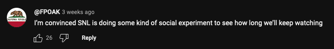
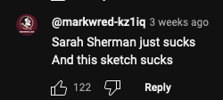
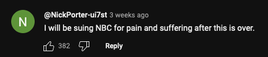
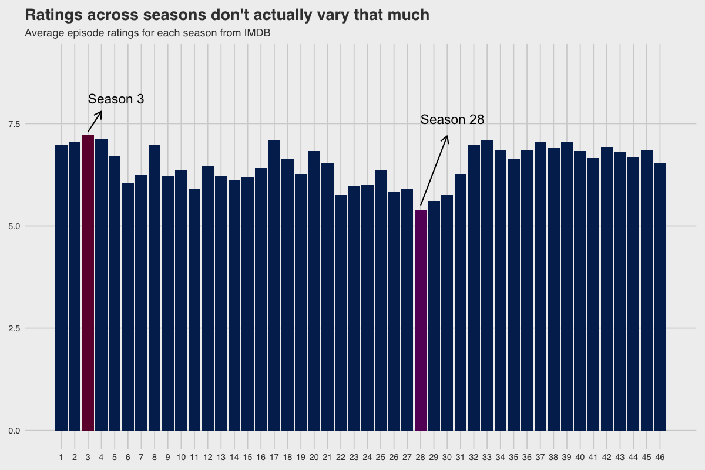
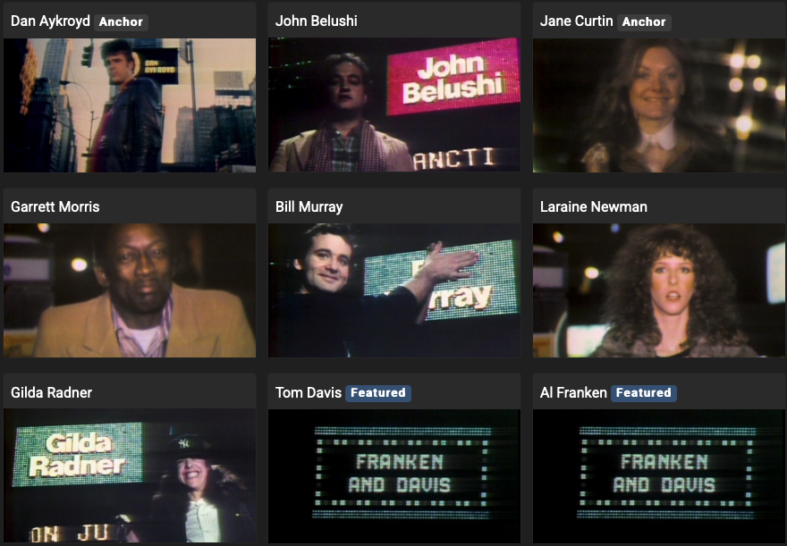
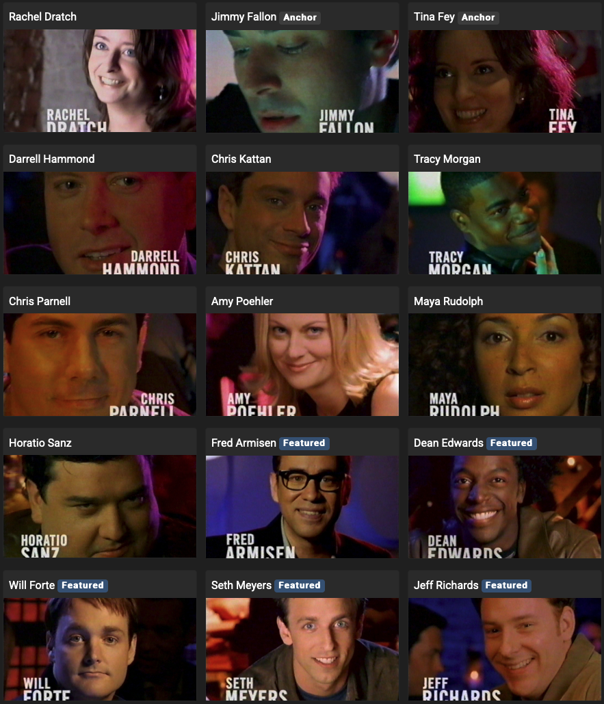

When was the best SNL era, objectively
Settling the debate once and for all.
A recurring debate amongst internet people is that SNL is getting worse, and that the "XYZ" era was the best season of SNL.
ugh the best era <3
— cass (@_cassieroberts_) February 16, 2024
And not infrequently, comments like this can be seen on their YouTube videos:
  As an avid casual watcher of SNL, I have my favourites too (Lonely Island era was the best, no questions asked). But I wondered if the quality of SNL was actually declining.
To investigate, I decided to look at the data, and this was what I found out:
For all the talk that people spout, the ratings don't actually vary that drastically across the 46 seasons I look at in the dataset.
Season 3 scored the highest with an average episode rating of 7.2. The cast during this season was:
Ironically, this season had quite a lot of off-screen drama.
According to Wikipedia, this was the season where original cast member Chevy Chase returned to host. The cast was allegedly resentful and Bill Murray and Chevy Chase apparently fought.
And yet, Season 28 was the worst scoring season, with an average episode rating of 5.4. The cast during this season was:
But somehow, in 2002, it was ranked 10th on TV Guide's 50 Greatest TV shows of All Time.
So, it seems that the quality of SNL doesn't actually vary that much across seasons. But I also wanted to know about the cast. How did the cast members stack up against each other?
This was a bit trickier. Ratings are usually for an entire episode so casts members don't get individual ratings. And with a variety show like SNL, how do you quantify how much a cast member actually contributed to it?
I decided attribute a cast member's particular score for an episode with proportional number of sketches they appeared in a particular episode. For example, if Chevy Chase appeared in 7 out of 13 sketches in the first episode, his rating of that episode would be 7/13 of the score of that episode.
Using that metric, here are the top 17 cast members of all time.
Or the dream team if you will:
| Rank | Cast Member |
|---|---|
| 1 | Bill Murray |
| 2 | Phil Hartman |
| 3 | Kristen Wiig |
| 4 | Taran Killam |
| 5 | Bill Hader |
| 6 | Beck Bennett |
| 7 | Cecily Strong |
| 8 | Dan Aykroyd |
| 9 | Joe Piscopo |
| 10 | Jane Curtin |
| 11 | Michael McKean |
| 12 | Gilda Radner |
| 13 | Will Ferrell |
| 14 | Amy Poehler |
| 15 | Janeane Garofalo |
| 16 | Charles Rocket |
| 17 | Kate McKinnon |
I think Kenan Thompson should be on the list but I guess if the data says he shouldn't then it must be true.
And if you're curious about the rank of your favourite cast member, you can search it up here: